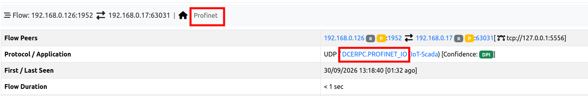
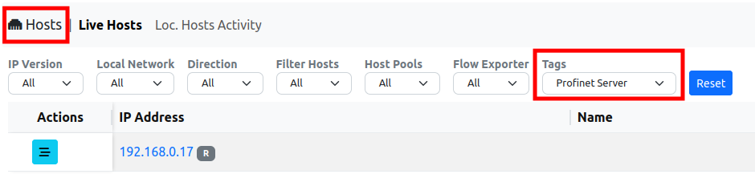
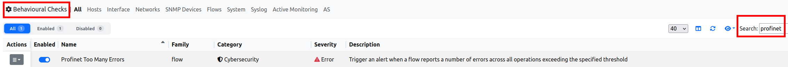

3. ПРОФИНЕТ
Примечание
Эта функция доступна только в том случае, если ntopng собирает потоки из nProbe через ZMQ (см. Использование ntopng с nProbe). Трафик PROFINET разделяется nProbe, который экспортирует информацию протокола в ntopng: эта информация недоступна на пакетных интерфейсах, где ntopng анализирует трафик самостоятельно.
ПРОФИНЕТ — это промышленный стандарт Ethernet, используемый для обмена данными между контроллерами ввода-вывода (например, ПЛК) и устройствами ввода-вывода (например, удаленными вводами-выводами, приводами, датчиками). Обмен циклическими данными процесса осуществляется напрямую через Ethernet, без IP. Вместо этого управление связью между устройствами (например, установление соединения, настройка устройства, чтение диагностики) основано на DCE/RPC через UDP, обычно на порту 34964: это трафик, анализируемый nProbe.
Для каждого потока PROFINET nProbe отслеживает выполненные операции DCE/RPC (например, подключение, запись, управление), их результаты и переходы между ними и экспортирует их в ntopng. ntopng отображает эту информацию в деталях потока, сохраняет ее вместе с потоком и использует для обнаружения непредвиденного поведения.
3.1. Информация о потоке
Потоки PROFINET отображаются в списке потоков с пометкой DCERPC.PROFINET_IO протокол приложения. При открытии сведений о потоке PROFINET в обзоре потока сообщается протокол, а в верхней панели отображается дополнительная информация. Профинет вкладка. Проблемы в разделе перечислены оповещения, инициированные потоком (см. Поведенческие проверки ниже).


Обзор потока PROFINET
Профинет Вкладка содержит информацию PROFINET о потоке:

Подробности потока PROFINET
График переходов (вверху слева): каждый узел — это операция, выполняемая в потоке, а каждая стрелка — это переход от операции к следующей. Чем больше переходов, тем толще стрелка. Циклы на одном и том же узле означают, что последовательные сообщения принадлежат одной и той же операции (например, запрос и его ответ или несколько последовательных операций записи). График можно увеличивать/уменьшать с помощью колеса мыши и перемещать, перетаскивая его.
Идентификация (вверху справа): идентификаторы DCE/RPC связи:
Объект UUID: объект PROFINET, которому адресованы запросы; он также кодирует идентификацию устройства;
Интерфейс ПНИО: используемый интерфейс PROFINET (например, устройство ввода-вывода или интерфейс контроллера ввода-вывода);
Активность: идентификатор сеанса DCE/RPC клиента.
Счетчики DCE/RPC (справа): количество DCE/RPC Запросы и Ответы потока.
Операции (слева внизу): список операций, выполняемых в потоке, с указанием количества Запросы, и количество ответов, сообщающих об ошибке (Ошибки) или успех (Успех).
Об операциях сообщается с их именем, а на графике переходов — с их числовым значением, например. Write (3).
Код |
Операция |
Описание |
|---|---|---|
0 |
Соединять |
Установление связи приложения (AR) между контроллером ввода-вывода и устройством ввода-вывода. |
1 |
Выпускать |
Прекращение отношений с заявкой |
2 |
Читать |
Чтение записей данных (например, данных диагностики, идентификации и обслуживания) в рамках связи приложения. |
3 |
Писать |
Запись записей данных (например, параметризация устройства) в рамках связи с приложением. |
4 |
Контроль |
Команды управления (например, окончание параметрирования, готовность приложения) |
5 |
Чтение неявного |
Чтение записей данных без связи с приложением (например, с помощью инженерных или диагностических инструментов) |
В приведенном выше примере контроллер ввода-вывода запускает устройство ввода-вывода: оно подключается к устройству (Connect), записывает свои параметры (Write) и сигнализирует об окончании параметризации (Control). В зависимости от портов, используемых устройствами, запросы и ответы операции могут передаваться в разных потоках: поэтому в примере Connect сообщает об успешных ответах, но об отсутствии запросов.
Информация PROFINET также доступна для исторических потоков, когда потоки сбрасываются в ClickHouse (см. Исторические потоки): данные исторического потока сообщают то же самое Профинет вкладка.
Наконец, сервер потока PROFINET помечается значком Профинет-сервер тег (см. Теги). Тег можно использовать, например, для вывода списка всех устройств PROFINET в Хозяева странице, выбрав Профинет-сервер в Теги фильтр:


Тег сервера Profinet
3.2. Поведенческие проверки
Информация PROFINET используется при одной проверке поведения потока, доступной в Настройки → Поведенческие проверки (тип profinet в поле поиска, чтобы перечислить его). По умолчанию проверка отключена.


Поведенческие проверки PROFINET
3.2.1. Конфигурация
Проверка включается с помощью переключателя и настраивается нажатием кнопки действий.
3.2.1.1. Profinet слишком много ошибок
Вызывает оповещение, когда количество ошибок, о которых сообщается для потока, достигает настроенного порога (по умолчанию: 5 ошибок). Ошибки — это ответы, сообщающие об ошибке, суммированные по всем операциям потока (т. е. Ошибки столбец Операции стол). Многие ошибки могут указывать на неправильную конфигурацию (например, устройство настроено с неправильной конфигурацией), на неисправность или на то, что устройства проверялись кем-то.
3.2.2. Оповещения
Предупреждения PROFINET представляют собой предупреждения потока: о них сообщается в Обозреватель оповещений (под Поток) и в Проблемы раздел сведений о потоке.
В описании оповещения сообщается подробная информация о событии:
Тревога |
Описание (пример) |
|---|---|
Profinet слишком много ошибок |
|